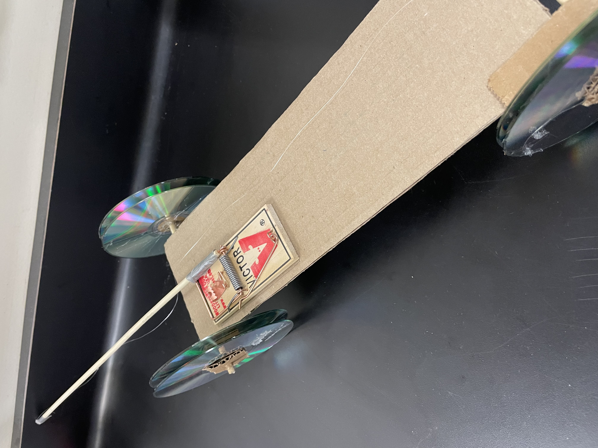
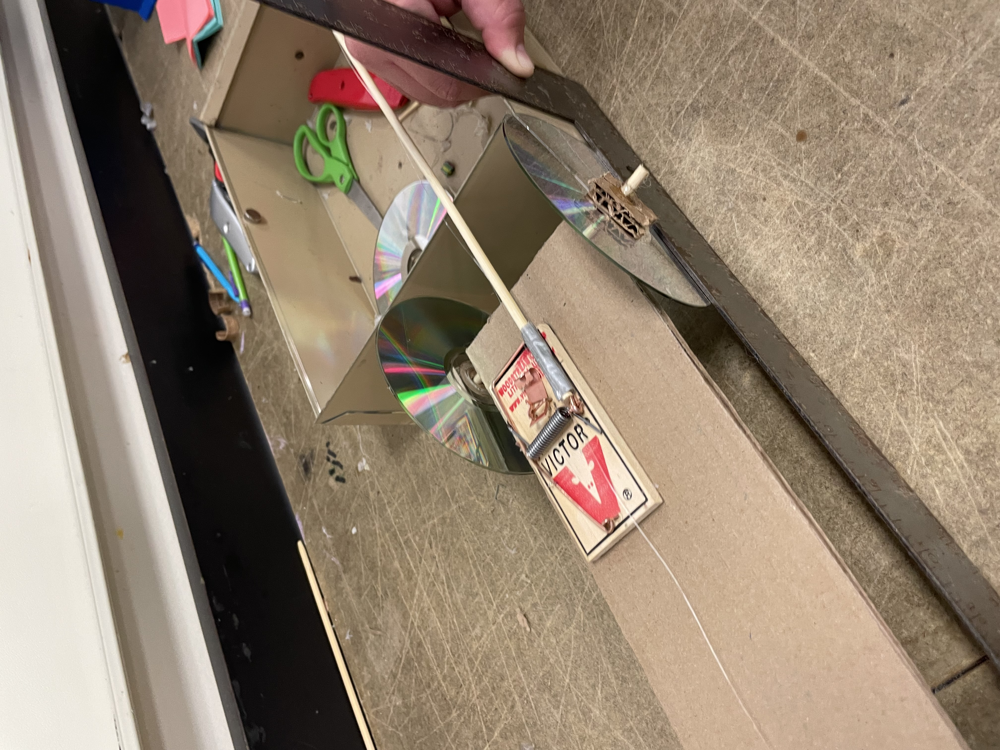
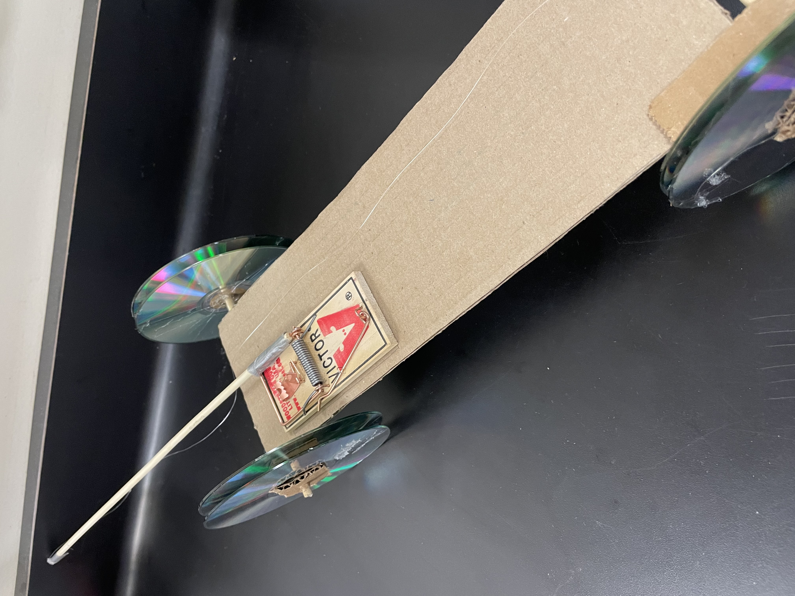
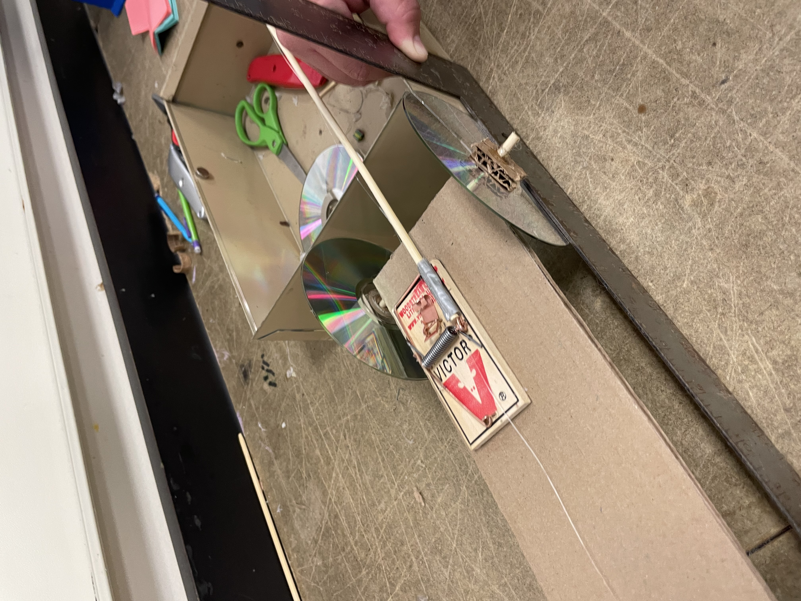

8/21-8/25 Week 1
This week we learned about Safety and Etiquette, and did our first challenge. We learned that while "in the workshop" it is important to follow S.O.P.s, the standard
operating procedure. It is also important to make sure you are wearing the correct equipment and clothing to be safe. In case of emergency, there are safety features
such as the eye wash station. After learning about safety, we did a challenge. In the challenge our goal was to transport a marble from the starting point to a bucket
using only 7 half tubes. To do this, we lined up the tubes holding them at slight slopes, and then had everybody who was not holding a tube line up in front of the last
tube. We would then pass on the tubes when the marble had already gone through them. Using this strategy, we were able to get the marble to the location of the bucket,
we just had trouble actually getting it in. I think if we had started off holding our pipes lower, we would have been able to do it.
8/28-9/1 Week 2
This week we worked on the designs of our Rube Goldberg machines. For this project, we needed to design a machine that started with dropping a baseball and ended with
popping a balloon. We worked in our groups to draw a design on paper, trying different ways to find the best one. Then, we used TinkerCad to make our designs 3D. Later
on, we will use our designs to actually build our machines. During the designing process, it was important to consider any possible problems that could happen with
our machine so that we did not run intothat problem later on.
9/4-9/8 Week 3
This week we continued our work on the designing process of our machines, and then started to build it. On TinkerCad we finalized our idea, and made sure it was to the
exact specifications we wanted. We measured the car to make sure that it would fit how we wanted it to in our machine. The car is an important part in our machine, so
it was important that it had the right amount of space. After we designed our machine to be exact, we began to build it. We started out by getting our materials, and
then we cut the cardboard peices to the measurements of certain parts of our machine, specifically the walls. We were only able to start cutting everything out, but we
will continue more next week.
9/11-9/15 Week 4
This week we spent mainly working on our Rube Goldberg projects. We cut out all of our cardboard peices, and then we began to assemble it. We had to make sure we had the
correct measurements for all our ramps, walls, and bases. In the end our project was made so that we rolled a ball down a ramp, and the ball then hit a car, pushing it
off another ramp, so that it landed on a lever that had a needle on the other side, that went up with the lever to pop the balloon. When we finished our project, we
tested it, and it worked how we had hoped it would. Our project wasn't too complicated, so we knew that it would definitely work if we executed it right.
9/18-9/22 Week 5
This week we did two challenges. One was a paper boat challenge and the other was a paper E challenge. For the paper boat challenge, our goal was to make a paper boat
that stayed afloat in the water holding the most amount of water for the longest amount of time. For my boat, I had a large flat rectangle as the base, and the sides
were walls that slanted inwards. The base was to distribute the weight well, and the base turned in to keep out any water. My boat stayed afloat for the full 5 minutes
with 41 grams. For the second challenge, we were supposed to create dimensions that someone else would use to cut out a paper E. We had to make sure the dimensions were
accurate, and that we labeled everything the person would need. I labeled my E in every place I thought was necessary.
9/25-9/29 Week 6
This week we learned about the basics of computer engineering, and the parts of a computer. We learned that computer engineering is a combination of Computer Science
and Electronic Engineering. Later on in the week, we were able to disect and put back together computers. We got to look at their different parts during the activity,
and see everything it takes to make a computer work. While we were taking apart the computer, we were very careful so we would not break anything, and so that we could
put it back together without a problem. We were able to both take it apart and put it back together in my group, and it was very interesting to see the way computers
were built.
10/2-10/6 Week 7
This week we learned about BioEngineering and did a challenge. We learned about how Bioengineering can be used to make prosthetics and things such as artificial hearts.
Those can be used to help people or animals who have a part of their body that no longer works well. After we learned about it, we did a prosthetics challenge. Our
challenge was to design a prosthetic body part for one of our favorite animals. We used TinkerCad to design it, and had limited time to come up with and design an idea.
For my idea, I designed a prosethetic front flipper of a sea turtle. I researched sea turtle flippers and looked at other prosthetic designs before I created my design
on TinkerCad. From my research, I knew to make the prosethetic flipper flexible and waterproof to best help the turtle.
10/9-10/13 Week 8
This week we learned about aerospace Engineering. We also designed bottle rockets or bottle planes on TinkerCad. We learned that Aerospace Engineering involves
designing and making aircrafts and spacecrafts. Then we started our work on our bottle rocket project by designing ideas on TinkerCad. I designed a bottle rocket
rather than a bottle plane. I designed it as a soda bottle with the lid area pointed down, and I attatched a front "nose" and fins to it. The front and fins would
help it in the air to fly longer and farther than if it did not have them.
10/16-10/20 Week 9
This week we built and tested our bottle rockets. Me and my partner combined our ideas to create a new rocket. The base of our rocket was a big empty bottle. On
the empty bottle we added a pointed cone shape as the front of the rocket. We used mutliple pieces of paper layered to make it stronger, and the tip was thin to
help point the way we wanted the rocket to go. Then we added wings on the side and a small fin on the top for the wind to glide over. Those were cut out of
cardboard and glued on. When we tested, our rocket went farther than those before it, but not as far as some. We used 60 psi and a cup of water. If I had to
change it, I would have changed the direction of the pencil on it (used to help direct the rocket) to be more in the middle of the rocket, because our rocket was
slightly tilted when we tested it.
10/23-10/27 Week 10
This week we learned about Environmental Engineering and did a challenge to go along with it. We learned about greenhouse gases, how to clean water, and ways that
we can reuse or save our resources on Earth. After we learned about that, we learned how to clean water by making our own filters. To make our filters, we were
able to use big rocks, pebbles, sand, and cotton balls. We would layer those in a chosen order inside the bottom of a plastic water bottle. Then, we took dirty
(black) water and filtered it through to get it as clean as possible. Our order starting from the top was big rocks, pebbles, sand, cotton balls. Our water ended
up better than it began, but I wish we had had the idea to clean our filter, like another group in our class.
10/30-11/3 Week 11
This week we learned about Electrical Engineering. We learned that electricity flows it a circle, and that the flow of electrons must be negative and positive.
We also learned about Ohms law, and how the Voltage of a circuit board is equal to the current times the resistance. After we did a worksheet on Ohm's law, we
worked on circuit boards on tinkercad. We worked on both kinds of resistance: parallel, and series. At first, the instructions were confusing and I didn't get the
assignment, but later I was able to connect the circuit board to make the lightbulb glow.
11/6-11/10 Week 12
This week we worked on a project about Electrical Engineering. We did labs 3 and 4 that worked on circuit boards, and different ways to connect the power to make
LEDs light up. We did circuits with LEDs in parallel, LEDs in Series, and with voltage dividers. First we did those different circuits so that when everything
was connected and working, the LED just stayed lit up indefinitely. Later on, we used arduinos and coding. Using that, we made it so that the circuits not only
lit up the LEDs, but the LEDs flashed on and off in different patterns.
11/13-11/17 Week 13
This week we learned about Business in Engineering. We learned about all the aspects of Engineering that need business and problem solving. We learned about
creating products and selling them. We also learned about the trolley problem, and how sometimes Engineers have to use ethics in issues they think about. After
we learned about Business in Engineering, we brainstormed ideas for our Shark Tank project. In the project, we have to think of a new invention to market, and
create a project that explains it well. My group did not come to a final decision on an idea, but we considered a jacket that can have different temperatures.
11/27-12/1 Week 14
This week we continued our work on Business Engineering. We finalized our ideas for a new product and created a slideshow. After that, we presented it to each
other. My group had a hard time thinking of a product at the beginning, but we ended up coming up with a design. Our product was a pot that had removable dividers
in it. The pot was designed to allow for more food allowed to be cooked at once, and less dishes used. We created our slideshow and then presented it together.
After presenting, we heard questions from our classmates that encouraged us to think of how we could better our project. One idea I liked to improve our project
was a lid that fit one part of our pot, so that no food could accidentally transfer to the wrong side.
1. The weight of our bridge was 89.9 grams. Because it was 3D and needed extra glue to stand up, it was a bit on the heavier side.
2. Our bridge held 2849 grams of water. It was able to hold almost a full bucket.
3. The ratio of weight of bridge to weight held was 32.
4. The thing that contributed most to the weight of our bridge was the fact that it was 3D. Because it was 3D we didn't only have the weight of the bottom of
the bridge like some other bridges, it also had the weight of the sides and top of the bridge. The bridge also had to be more than 2 feet long.
5. I designed the bridge. To design it, I looked online for structures of strong bridges. Using those ideas a drew a similar design, but changed it in small
ways to better work for our purposes. In that way, the design of our bridge was part inspiration, part research.
6. Our bridge did better than we thought it would after we first built it. After building it we were unsure if the bridge would be stable enough. However, when
we tested it, the bridge did a lot better than we thought it would.
7. I did not have an expected weak point of our bridge, but it ended up snapping near the sides where we were holding it. The bridge itself remained mostly
intact, it was just at certain parts that the bridge broke away from itself.
8. To improve our bridge, I think we could have added more spaghetti to the ends of the bridge where you hold it. If there was extra spaghetti there, it would
hold better and stay intact for longer.
1/8-1/12 S2 Week 1
This week we learned about Chemical engineering. We had a slideshow presentation and watched a video that explained Chemical engineering. It explained the
difference between Chemistry and Chemical Engineering. After we learned about Chemical Engineering, we did a project for it. Our project was to make Oobleck
using cornstarch and water. We worked with a partner to try to find the right consistency of our Oobleck. The goal was to make it so that it was liquid when
untouched, but once pressure was put on it, it would become harder. To do this all we had was a certain amount of cornstarch, and water. Me and my partner added
our water very slowly, and were able to get the right consistency in the end.
1/15-1/19 S2 Week 2
This week we learned about our next project, the mousetrap cars. In this project we will create cars using a mousetrap as the only source of energy to make it
move. We started by doing research on how to make a car like that. We watched a video about Mouse Trap cars by Mark Rober that taught about the best length
of lever, and best amount of wheels. After doing research we created our Project Proposal. For the car I'm going to be helping make, I think we should use 4
wheels instead of 3 to give it better stability. I also think we should use a straw connected to the car, with a wooden skewer with wheels attatched layered
inside it. That could function as a replacement ball bearing. I also think we should have a longer lever attatched to the mouse trap.
1/22-1/26 S2 Week 3
This week we worked more on planning our mousetrap cars for our next project. I worked on a drawing of an idea for a car, and all the calculations. For example
finding out the Mechanical Advantage, and how far the car will ideally go, if everything goes right. We also made a TinkerCad, so we had a 3-D model of what
our car would look like. In the future, we will start building our car. We will probably start with the basic parts like the body of the car. Then, we can
make the wheels and put them in to make sure the car goes straight. Once we have the basic structure of a car we can figure out how to power it using a mousetrap.
1/29-2/2 S2 Week 4
This week we spent time working on and building our mousetrap cars. First we had to measure out the body on cardboard to the measurements we had written down
in our original plan. Then, we cut out our body of the car from the cardboard. Next, we worked on the wheels. To that we had to create a "ball bearing" by
fitting a wooden dowel inside a plastic straw. The plastic straw we glued directly to the body of the car, but the wooden dowel just sat inside the straw so
it could move around. The CD wheels were directly attatched to the wooden dowels. Using cardboard glued to the CDs we made sure they would stay stuck together.
We finished off this week with having the structure of the car and wheels, but no way yet to power it.
2/5-2/16 S2 Week 5/6
This week we finished our mousetrap car. We powered it using a mousetrap with a dowel and string attatched to it. The string attatched to the dowel was also
attatched to the axis of the back wheels, making it move when the mousetrap was set off. We tested our car when finished, but it didn't go quite as straight
or far as we had hoped it would. One of the wheels on the car was not quite straight and a little wobbly. This caused the entire car not to go straight, which
in turn made it not go quite as far. In our next design we will try to make sure the wheels are straight, and we will make the dowel longer to help it travel
further. Our prediction for how far our car would go was 34.6 ft but it ended up only being 29.4, with a percent error of 17.69% ((34.6-29.4)/29.4 x 100). Next
we will design our second car and work on making it.
We designed our second car to be pretty similar to our first car, but with improvements to make it better. We were very careful in trying to make the wheels
as straight as possible. It was very difficult, and they were not perfect but they were as straight as we could make them. We kept the basic design of the
car the same. However, we made the car body and the dowel longer. Making those longer was successful, and we were able to make our car go farther. Our first
car went only 29.4 feet, but our second car was better and went 52 ft and 7 inches. We had leftover time so we tried to make our car even better and tested
what would happen if we made all our wheels double wheels. However, that made the straightness of the wheels even less predictable, so it went even less straight
and less far. However, it still went farther than our first car.
2/19-2/23 S2 Week 7
This week we tested the final design of our mousetrap cars. Testing went better than I expected it to. Although it was not perfectly straight, the car went
relatively straight. The car traveled 50 feet and 10 inches, which was not quite as far as the farthest distance it traveled (52 feet 7 inches) but still much
farther than our first car traveled. With trying to make last minute changes to our car, the wheels became slightly more slanted so I was worried our car would
not travel very straight. However, it went straighter and farther than I expected it to. If we had more time I would probably try to spend more time making
sure our wheels were perfectly straight. Having a longer body and lever could also have made it go farther. However, I think the basics of our design worked
pretty well.
2/26-3/1 S2 Week 8
This week we started work on a design for an object to protect an egg during an egg drop. We created a TinkerCad and started building. Our design includes an egg
inside a cardboard pyramid filled with cotton balls. The cardboard pyramid has straws attatched to the edges of it and extends outward so the straws will take
the blow of the drop instead of the egg. There is also a parachute made of a trash bag attatched to the top. We started building it, but will continue more next
week. We also did a doors vs. wheels challenge to see how many more there were of each in the school. I was on the door team and we went around and counted all the
doors (including lockers) in all the buildings. Our team ended up winning.
3/4-3/8 S2 Week 9
This week we finished building our egg drop design. Our design involved the egg being surrounded with cotton balls inside a cardboard pyramid. The cardboard pyramid
had straws attatched to the points, going along the points and hanging off. There was also a parachute made of a cut trash bag and strings attatched to the top.
Other than working on the egg drop design, we did a challenge. The challenge was to use a single piece of paper and create a device that could fly far. I decided
to use my paper to make a paper airplane. I researched online, and found a design that I thought would fly far. The tip was thin with thicker wings. Folding the plane
went pretty well. However, when we tested there was wind, so it did not fly quite as far as I thought it would.
3/11-3/15 S2 Week 10
This week we tested our egg drop designs. Our design worked pretty well and the egg survived. The parachute worked well and opened up so that the device came through
the air slowly instead of hitting the ground fast. The straws ended up snapping, but we expected that. Although the straws snapped they took the force of the fall,
so the egg didn't. If I had to change anything, I would just make the parachute even bigger. Other than testing the egg drop, we also did another challenge. This
challenge was to create a device out of rubber bands and popsicle sticks to hold a water ballon. The device would be attatched to the end of a meter stick, and someone
would hold the meter stick while running and trying not to pop the balloon. we made our device like a pyramid and it held the balloon in secure. It worked well.
3/26-3/30 S2 Week 11
This week we started a new project. The project is to make a boat or other flotation device that can travel through water all on its own. It must travel through a
gutter that is 8 cm wide and 500 cm long. It must be powered by something, wether wind (someone's breath), motor powered, or with rubber bands. We have a limited amount
of materials we are allowed to use to make our boat and we are working in groups of two. My partner and I are planning to make our boat move using rubber bands and
wooden popsicle sticks. Using the popsicle sticks we made a sort of fan/motor that will be wound up using the rubber bands and help the boat move through the water. We
also added a sail to our boat so the wind can help it move too. The difficulty of making the boat will be that it has to be smaller than 8 cm to fit in the gutter.
4/1-4/5 S2 Week 12
This week we finished making our boat. We made the body of our boat out of a plastic cup, so it wouldn’t crumble in the water. On the front we attached some paper
that came to a point to help it glide through the water better. We also had a hole in the bottom of our boat so that the fan/motor could go through the water. For
stability and to help it float, we added two straws to the bottom of our boat. When testing, our boat did not work quite as well as we thought. Our fan/motor worked
and wound well, however, it went to fast and used up all its power and energy all at once. Because the boat had to be small, the gap for the motor to move in was also
small. Because of that, the motor also got caught onto the sides of the boat, causing it to get stuck. If there had been a way to make the motor go slower or not get
stuck, I think it would have worked better. We also should have blocked off both sides of the straws on the bottom of our boat, which probably would have helped it
to float better.
4/8-4/12 S2 Week 13
This week we started with brainstorming on our new project. Our new project is building cardboard boats. The boats can only be made with cardboard and one roll of
ducktape. The boat also has to be big. The boat has to hold two of the four group members. With the two people in it, the boat has to travel from one end of the pool
to the other and back. We started by researching ways to make a cardboard boat. I saw different ideas online of how to make a boat. The way I see it, the design can
be fairly simple, as long as it is able to stay afloat in the water. The boat also has to be easy to build big and able to hold two people in it without tipping it
over. We made TinkerCads as a 3D model of our designs for the boats. The class also did another challenge, but I did not do it because I was not in class that period.
4/15-4/19 S2 Week 14
This week we started to build our cardboard boats. My group didn't actually start building ours, but we started to measure it out and cut out some of the pieces we
will use to build the boat. Unfortunately, we could only use one piece of cardboard, so after we planned out all the pieces we needed to cut, we were only able to cut
out one of our bigger pieces, and that was it. Although we could not cut out all the pieces, we still planned what we needed to cut out and some more of the specifics
of our boat. When we were measuring and cutting we made sure to be very precise and specific so our boat would fit together just as it was supposed to. We measured
multiple times to make sure it was right before we actually cut the piece out.
4/22-4/26 S2 Week 15
This week we continued to work on our cardboard boats. We cut out a lot of the pieces we needed for our boat, measuring and cutting them exactly how we needed them to
be. However, our boat design has a double layered base and the boat is pretty long, so we needed 4 big pieces of cardboard to make just the base. Because of that, we
couldn't get enough cardboard this week to fully make the base, and we haven't started building up the boat a lot. However, we should still be able to finish in time,
and having the double base will make our boat more sturdy, and make sure it doesn't have any water soaking through the bottom. We cut out a lot of pieces we needed, and
next week we will be able to put all the pieces together and start having a full boat.
4/29-5/3 S2 Week 16
This week we continued to work on our boat. We cut out all the bottom pieces and a lot of side pieces, so we were finally able to start taping the boat together. We
taped together our whole base, and because it is double layered with cardboard it is very strong and secure. After we were done taping the bottom, we started to tape
the walls to the boat. That was more difficult, because we had to line it up just right, make sure the tape didn't fold into itself or get tangled, and stretch the tape
over the corners. We were able to get the bottom taped together, and four of the walls taped together. We had to make sure it was taped really well and flush to the
cardboard, so the tape wouldn't come off in the water. Next week we will continue to tape our boat and get as much done as we can.


 
